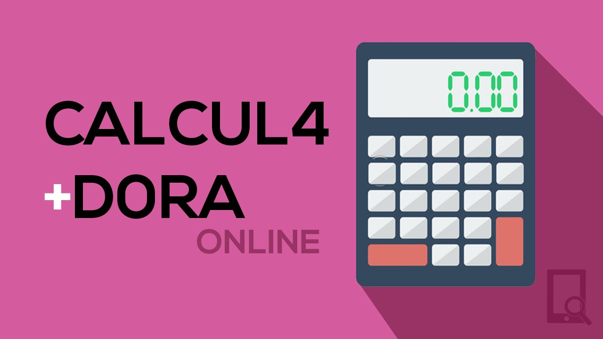

Meus projetos
Jogo da Memória: Encontre os Pares
Este projeto é um jogo da memória com cartas temáticas, feito com HTML, CSS e JavaScript. O jogador deve encontrar os pares certos e completar o desafio no menor tempo possível. Foi uma ótima forma de treinar lógica, eventos e manipulação do DOM.
Site de Receitas Interativo
Este projeto é um site de receitas culinárias que permite visualizar, adicionar e filtrar receitas. Desenvolvido com HTML, CSS e JavaScript, ele mostra como é possível criar interfaces organizadas e funcionais para o dia a dia.

Calculadora Online
Esta é uma calculadora funcional feita em JavaScript que realiza operações básicas como soma, subtração, multiplicação e divisão. Um projeto excelente para praticar funções, eventos e controle de estado.